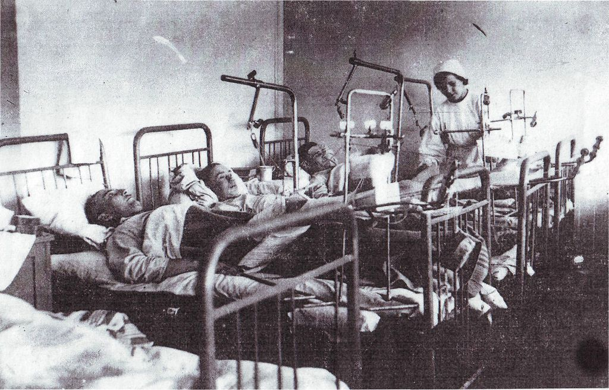

Свердловск (ныне Екатеринбург) в годы Великой Отечественной войны стал одним из главных центров приёма эвакуированных предприятий и населения. Расположенный в глубине Урала, город обладал мощной промышленной базой и развитой железнодорожной инфраструктурой. Сюда направлялись эшелоны из Москвы, Ленинграда, Украины, Белоруссии. По данным историков, в Свердловск и область было эвакуировано более 50 крупных заводов и около 300 тысяч человек.
Уральский регион, включая Свердловск, Челябинск, Нижний Тагил, стал кузницей оружия Победы. На базе эвакуированных предприятий здесь развернулось производство танков, артиллерийских систем, авиамоторов, боеприпасов. Особую роль сыграл Уральский завод тяжёлого машиностроения (Уралмаш), который вместе с эвакуированными из Ленинграда, Харькова и Сталинграда предприятиями стал одним из флагманов оборонной промышленности.
Ниже — ключевые цифры, маршруты, фотографии и интерактивные блоки, раскрывающие вклад Свердловска в эвакуационную эпопею.
Цифры и факты: Свердловск в годы войны
Первый эшелон с эвакуированным оборудованием прибыл в Свердловск в июле 1941 года. К концу года в городе и области разместили оборудование таких гигантов, как Ленинградский Кировский завод (частично), Харьковский завод транспортного машиностроения, Московский подшипниковый завод, заводы «Красное Сормово», «Электросила» и десятки других. В кратчайшие сроки на новых площадках было налажено производство танков Т-34, артиллерийских установок, авиадвигателей, снарядов.
Наряду с промышленностью в Свердловск были эвакуированы Академия наук СССР (часть учреждений), Всесоюзный институт экспериментальной медицины, Московский университет (отдельные факультеты), театры. Это дало мощный импульс развитию города и позволило сохранить научный и культурный потенциал страны.
Фотогалерея: Свердловск — город-тыл



Интерактив: подробности эвакуации
Эвакуация промышленности в Свердловск
- Уралмашзавод принял оборудование из Ленинграда, Харькова, Сталинграда. На его базе развернулось производство танков Т-34, самоходных артиллерийских установок.
- Завод № 37 (Москва) — эвакуирован в Свердловск, выпускал авиационные моторы.
- Завод «Электросила» (Ленинград) — эвакуирован в Свердловск, производил электродвигатели для танков и подводных лодок.
- Кировский завод (Ленинград) — часть оборудования направлена в Свердловск, позже переведена в Челябинск (Танкоград).
- Всего в Свердловской области разместили более 120 эвакуированных предприятий (включая малые и средние).
- Объём промышленного производства в Свердловске за годы войны вырос в 7 раз, обеспечив фронт танками, артиллерией, боеприпасами.
Культурная и научная эвакуация
- В Свердловск эвакуированы Президиум Академии наук СССР, ряд институтов: физический, химический, геологический, металлургический.
- Московский университет (МГУ) разместил в Свердловске несколько факультетов, что позволило продолжить обучение студентов.
- Театры: Московский театр имени Ленинского комсомола, Ленинградский театр юного зрителя, ряд музыкальных коллективов.
- В Свердловске работали эвакуированные писатели, художники, композиторы — это способствовало культурному подъёму города.
- После войны многие деятели культуры и науки остались в Свердловске, обогатив его интеллектуальный потенциал.
Урал — опорный край державы
Свердловск и другие уральские города приняли на себя основной удар эвакуации. Благодаря самоотверженному труду рабочих, инженеров, учёных, уже к концу 1941 года эвакуированные заводы начали выпускать продукцию. К 1943 году Урал давал более 40% всей военной продукции СССР. Свердловск стал одним из центров формирования Уральского добровольческого танкового корпуса.
Тысячи свердловчан и эвакуированных работали на заводах по 12–14 часов в сутки, жили в бараках и землянках, но выстояли и внесли решающий вклад в Победу.